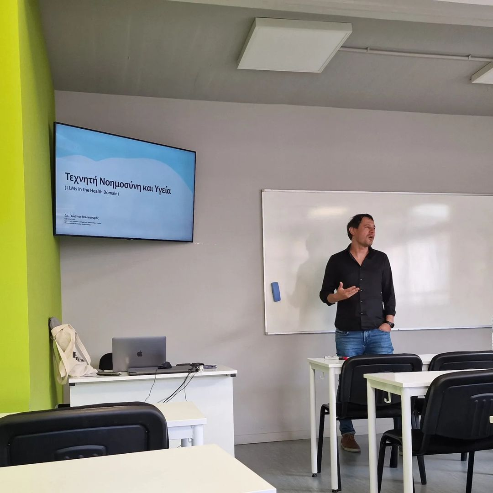

News
Posted on August 7, 2024

Our team is thrilled to share that we presented a second paper this month titled "Towards LLM-based Semantic Analysis of Historical Legal Documents" at the First International Workshop of Semantic Digital Humanities (#SemDH2024). In this paper, Tania Litaina, Andreas Soularidis, Georgios Bouchouras, Konstantinos Kotis, and Evangelia Kavakli explore the potential of large language models (LLMs) for the semantic analysis of historical legal documents. Our research is still in its early stages, and we are continuously learning and refining our novel methods. However, our findings suggest that LLMs could become a valuable tool for understanding and organizing complex legal data from history. We are particularly excited about the potential applications of this research in the field of legal history. The ability to analyze and interpret historical legal documents with greater accuracy and efficiency could significantly advance our understanding of legal developments over time. We invite you to take a look at our paper and share your thoughts: Read the paper. If you're interested in LLM applications or have insights to share, we would love to connect and discuss further! #LLMs #DigitalHumanities #ResearchInProgress Konstantinos I. Kotis Andreas Soularidis Evangelia (Vagelio) Kavakli Intelligent Systems Research Lab (i-Lab)
Posted on July 25, 2024

Presentation at the First Generative Neurosymbolic Workshop. I am thrilled to share that I just finished my talk at the First Generative Neurosymbolic Workshop, held as part of the Extended Semantic Web Conference in Crete. My presentation, titled “How We Can Use LLMs to Create an Ontology for Parkinson’s Disease,” was successfully completed. In this talk, I explored the innovative ways in which large language models (LLMs) can be leveraged to develop a comprehensive ontology for Parkinson’s Disease. This ontology aims to enhance our understanding and organization of knowledge related to the disease, ultimately contributing to more effective research and treatment strategies. Collaborating with Pavlos Bitilis and George Vouros, our team at the Intelligent Systems Research Lab (i-Lab) is excited to share these insights and advancements in the field. The potential of LLMs to transform the way we approach complex medical conditions is immense, and we are eager to continue pushing the boundaries of this research. Stay tuned for more updates as we further develop these methods and explore new applications! Konstantinos I. Kotis Pavlos Bitilis George Vouros Intelligent Systems Research Lab (i-Lab)
Posted on July 30, 2024
Our lab is equipped with advanced tools, such as sensor plates and cameras, that enable us to capture and analyze a wide range of movements with great precision. A key aspect of our work involves the integration of machine learning, which helps us analyze complex movement patterns and uncover insights that can inform everything from athletic performance to rehabilitation and ergonomics. This cutting-edge technology allows us to push the boundaries of movement research and apply it to real-world challenges.
Posted on May 30, 2024

We discussed the latest developments in Artificial Intelligence and how they can impact the field. We exchanged ideas and insights, exploring how we can use these technologies to improve the quality of healthcare and our lives.
Posted on April 30, 2024

It was a great opportunity to present the interesting topics we are studying at the Intelligent Systems Lab of the University of the Aegean. We discussed how artificial intelligence can transform teaching practices and enhance individual learning. We explored useful tools and programs. Impressive participation with over 100 attendees. Let's join forces to explore and implement innovative solutions that will enhance learning. Congratulations to the association for this initiative.
Posted on September 16, 2024
Today, I had the opportunity to deliver a seminar to the first-year students at Metropolitan College Thessaloniki, centered on Ankle Sprain Prediction using OpenSim. We explored how this powerful musculoskeletal simulation tool is revolutionizing our understanding and prevention of ankle injuries. The seminar delved into: Drop Jump-Induced Sprains: We discussed how high-impact activities, such as drop jumps, contribute to ankle sprains, and how we can simulate these scenarios in OpenSim to predict injury risks. Ankle Foot Orthosis (AFO): We reviewed the role of AFOs in stabilizing the ankle and reducing the likelihood of sprains, particularly during challenging movements.
Posted on September 20, 2024
Today, we welcomed some of our students from the School of Health. We discussed an interdisciplinary approach to treating ischemic stroke patients and how our various departments can collaborate to improve patient health and overall quality of life.
Posted on June 20, 2023

Recently, I had the opportunity to collaborate with my friend and colleague, Efthimia Rova, on an interdisciplinary educational scenario, which was approved by Photodentro and is available for use by teachers of relevant specialties
Posted on September 30, 2024
We are pleased to share that our team has completed the development of the study guide for the General Secretariat for Vocational Education, Training & Lifelong Learning of the Greek Ministry of Education, Religious Affairs, and Sports.